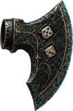
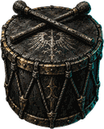
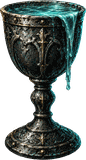

Vampire FangBasic attacks steal 10%

Ember HeartEach hit adds Burn: 16.5% of that hit over 3s; contributions add

Mirror Shard+72% thorns

Cracked Hourglass−20% cooldowns

Sharpened Fate+20% crit damage

Blood VialPotions +60%

Second Skin+720 evasion

Tithe Bowl+15% gold, +15% souls

Weighted Die+1 to rolls, except the gambler; dice past +3 in battle become crit damage

Scarred GorgetHeavy blows deal 18% less, +10% max HP

Cracked Lens+12 crit rating, +7.5% crit damage

Ash CenserEach hit adds Burn: 10.5% of that hit over 3s; contributions add, +12% attack speed

Iron Spur+12% attack speed, +8% dmg

Wolf's Tooth9% chance to strike twice

Serpent Scale+63% thorns, +21% armor

Warden's Plate+33% armor

Veil of Motes+480 evasion, +8% attack speed

Bulwark SigilHeavy blows deal 20% less

Voidscale+27% armor, +300 evasion

Stone HeartThe first heavy blow each fight is blockedchanges a rule

Bitter DraughtA potion drunk while a foe winds up: +200% armor for 5schanges a rule

Mirror StepWhenever you dodge an attack, answer it with 100% thorns, plus half your Thornschanges a rule

Keeper's PulseA Perfect cast: your next hit is a crit at +25% crit damagechanges a rule

Tithe of ThreeEvery third kill banks a block against the next heavy blow, 2 held at mostchanges a rule

Thorned VowA heavy blow that lands while your second ability is on cooldown heals 25% max HP before the hitchanges a rule

Carrion Crown+20% dmg, healing 35% weakerfrom floor 51

The Long Tally+0.4% hit damage per kill this climb, with diminishing gains, −8% max HPfrom floor 51

The Drowned Purse+30% gold, +30% souls, −8% attack speedfrom floor 51

The Bone ChaliceBasic attacks steal 8%, healing 30% strongerfrom floor 51

Marrow BrothHealing 35% stronger, +8% max HP

Litany StoneAbilities gain +12% power, −6% max HP

Ribbed CuirassJabs deal 30% less, +18% armor

Widow's Thread+16 crit rating, healing 25% weaker

Thin Ration+14% attack speed, −12% max HP

Splitting FangYour hits deal 25% of their damage to each other foefrom floor 101

GravebiteAfter a timed Break tap on an enemy's Barrier, your next direct hit deals +50% damagechanges a rule

Dirge BellPerfect casts make the targeted foe deal 20% less damage for 5schanges a rule

The Low EbbYour hits deal +30% damage at 50% health or lesschanges a rule

Quiet FontStart each fight with a 15% max-HP Ward for 8schanges a rule

The Ringing HelmYour hits deal 25% more damage to stunned foeschanges a rulefrom floor 101

The Held BreathEach dodge banks +4% power for your next first ability, up to 40%changes a rulefrom floor 101

The Deep FrostYour hits deal 20% more damage to slowed foeschanges a rulefrom floor 101

The Wide CutYour first ability deals 50% of its damage to each other foechanges a rulefrom floor 101

Saint's SplinterYour second ability grants +1 Sanctuary chargechanges a rulefrom floor 101

The Restless ClayYour Effigy attacks 2x as fastchanges a rulefrom floor 101
Quickening WoundAt 50% health or less, you attack 30% fasterchanges a rulefrom Prestige 1
The Weeping BrandYour hits deal 20% more damage. In a fight you lose 3% of your health a second, never below halfchanges a rulefrom Prestige 1

Headsman's WagerYour hits deal 60% more damage to foes at 30% health or less, and 10% less to foes above half healthchanges a rulefrom Prestige 1

Drumming HeartEach basic hit gives +2% attack speed for the fight, up to 10 times. A landed heavy blow resets this effectchanges a rulefrom Prestige 1

Brimming CupHealing past full, lifesteal too, becomes a Ward, up to 20% of your max HP, for 6schanges a rulefrom Prestige 1
Unmarked VowAbove 90% health, your hits deal 12% more damagechanges a rulefrom Prestige 1